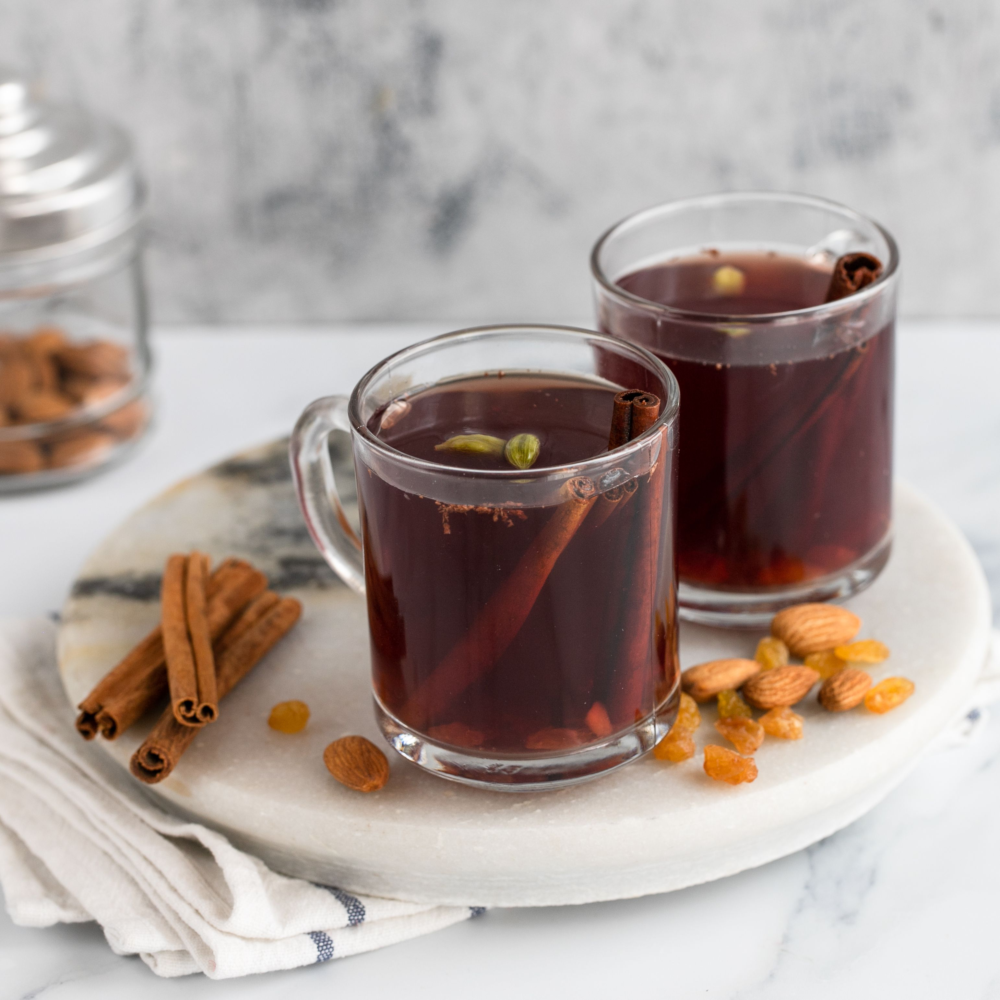

Glogg Recipe
Swedish Mulled Wine

Introduction
Befitting the winter christmas climate, glogg has a special ability to warm your soul from the inside out.
It can be enjoyed in both an alcholic and a non-alcoholic form, but will always be served with select dried fruits and slivered almonds. Don't forget your spoon!
Ingredients
Makes 1500mL of liquid
- 2 cinnamon sticks, broken down
- 1 teaspoon of cardamom pods
- 1 small piece of ginger, peeled
- zest of 1/2 orange
- 6 whole cloves
- 1/2 cup liquor of choice - vodka, rum or bourbon
- 750mL bottle of dry red wine
- 1 cup of ruby port or Medeira
- 1 cup granulated sugar
- 1 tablespoon vanilla sugar
- 1/2 cup blanched whole almonds
- 1/2 cup dark raisins
Steps
- Crush the cinnamon and cardamom; transfer to glass jar and add ginger, orange zest, cloves and liquor. Let sit for 24 hours
- Strain mixture through sieve into large saucepan, discard spices. Add wine, port, granulated sugar, vanilla sugar, almonds, raisins and heat over medium heat until bubbles form at edges.
- Ladle the mixture into mugs, ensuring each gets almonds and raisins. Keep any remaining liquid on low heat until read to serve, taking care to not let it boil.
HOME